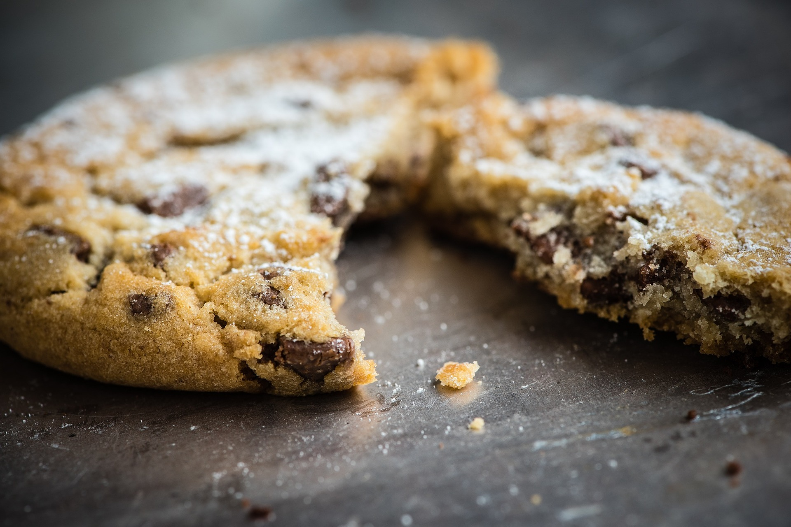
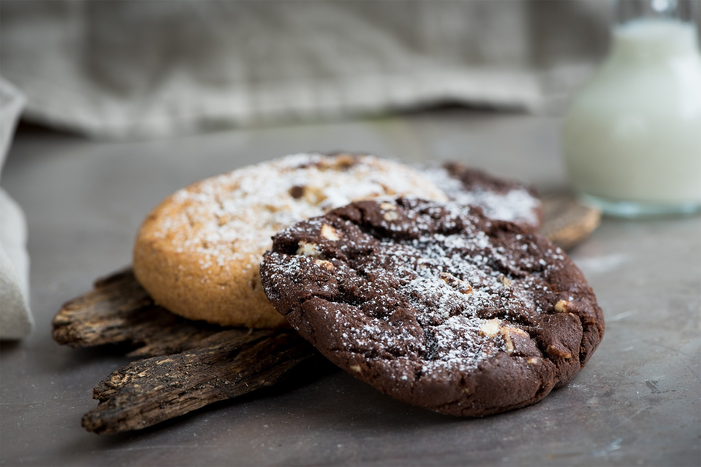
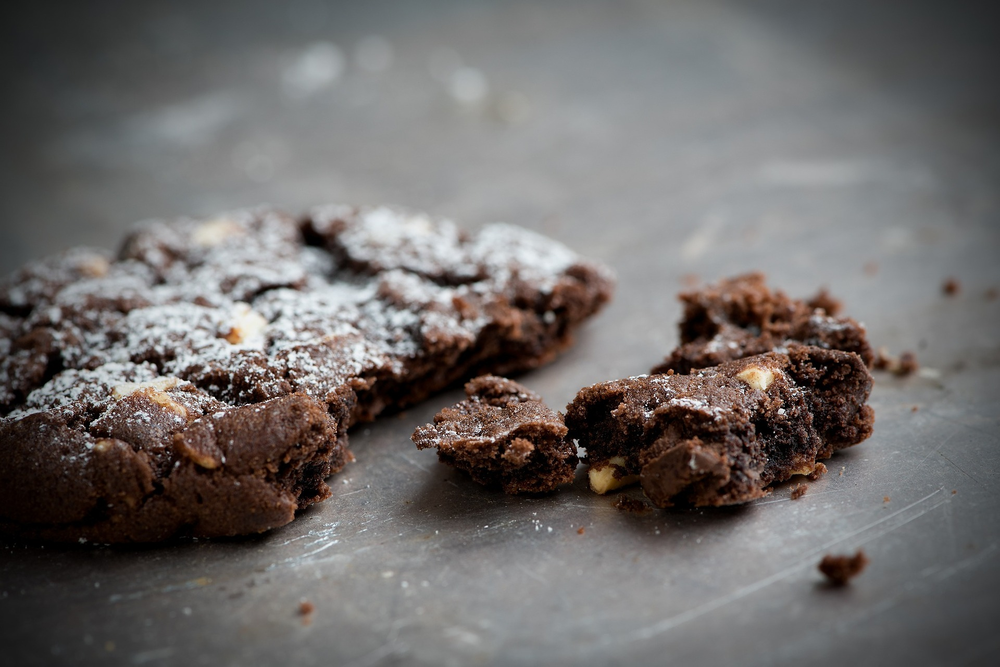

Suklaahippu-cookiet

Suklaahippu-cookiet ovat tunnetuimpia amerikkalaisia leivonnaisia. Parhaimmillaan nämä ovat kun pinta on paistettu rapeaksi, mutta sisus on hieman taikinamaista ja sitkeää. Reseptiä on helppo muunnella lisäämällä suklaahippujen tilalle esimerkiksi kuivattuja karpaloita, pähkinöitä tms. Lisäämällä kaakaojauhetta taikinaan saat suklaacookieita, vähennä tällöin hieman vehnäjauhojen määrää. Alkuperäinen ohje Kinuskikissalta.
Raaka-aineet (n. 16 kpl jättikeksejä)
- 175 g voita
- 1,5 dl sokeria
- 1,5 dl fariinisokeria
- 1,5 tl vaniljauutetta
- 1 iso kananmuna
- 4 dl vehnäjauhoja
- 1 tl leivinjauhetta
- 1 tl ruokasoodaa
- 0,5 tl suolaa
- 2,5 dl suklaahippuja/nappeja
Valmistus
- Sulata voi kattilassa, niin että se kiehahtaa.
- Lisää molemmat sokerit ja anna niiden sulaa hieman joukkoon.
- Lisää vaniljauute sekä kananmuna reippaasti vispaamalla.
- Yhdistä kuivat aineet keskenään ja lisää ne muutamassa osassa taikinaan.
- Anna taikinan jäähtyä kädenlämpöiseksi ennen kuin lisäät suklaat.
- Annostele taikinaa kasoiksi pellille leivinpaperin päälle. Huom! Jätä reilusti leviämisvaraa!
- Paista 200 asteessa 8-10 min. Ole tarkkana paiston kanssa jotta keksit jäävät hieman keskeltä pehmeiksi.


